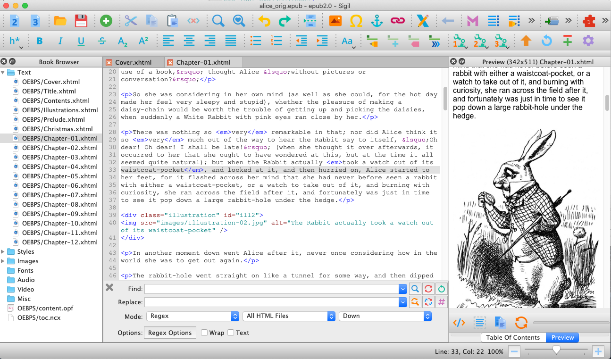

— Make it Work the Way You Want —
The Sigil user interface is highly configurable.
Sigil supports both Dark and Light themes inherited directly from your System preferences settings.

On macOS, your System Preferences can be used to change from Light to Dark themes at any time or even automatically based on time of day. On Windows and Linux, your System theme is detected and set at Sigil’s launch. You can override this setting using an environment variable and then restart Sigil to see the changes.
set SIGIL_USES_DARK_MODE to 1 to force Sigil to use a Dark theme when your system uses a Light theme.
set SIGIL_USES_DARK_MODE to 0 to force Sigil to use a Light theme when your system uses a Dark theme.
Sigil’s primary interface consists of a main window in which are displayed several panels plus a set of toolbars. Which of these items you want to display are configurable using the View menu.
The panels you want to display can be customized in the main View menu.

The panels you can use are:
The Toolbars can be customized using the Toolbars menu, which is posted by hovering the mouse over the “Toolbars” item at the top of the View menu.

The rest of this chapter discusses three topics
Open the menu and select the toolbars that you want to see in the UI. Then, move them to the locations that best suit you.
To move a toolbar to a different location, hover the cursor over the grab bar on the left side of the toolbar. When you do that, a move cursor will appear.

Drag the toolbar to a different location on the main window. An area will highlight where the toolbar will be placed when you release the mouse.

You can also resize the toolbar by dragging the move mouse cursor to the left and right.

If you make the toolbar smaller than a size that will display all of the icons, an arrow will appear at the right side of the toolbar. When you click on that arrow, a submenu will appear allowing access to all the buttons in the toolbar.

The panels are customized in a similar way that you customize the toolbars. If you move the mouse cursor to the top banner of a panel and press the left mouse button, the move cursor appears. You can then drag the panel out of the main window to undock it from the main window. The panel becomes a free floating window.
To re-dock the window back into the main window, drag it until the area where you want to place it is highlighted and release the mouse button.
You can drop the floating window onto an existing panel to create a tabbed interface for the two panels. You do this by dragging it over the existing panel so that the existing panel is highlighted.

When you drop the window, a tab will be created so that you can switch between the two panels.
To dock the window back in as a separate panel next to an existing panel, drag it over the main window until an area is highlighted to the side, top or bottom of the existing panel, then release the mouse button.
The window will be redocked into the main window as a separate panel.
The relative sizes of the panels can be adjusted by hovering the cursor over the boundary between the two panels and dragging the boundary to a new location.

The icons can be customized in the Preferences dialog.
To customize the icons theme, open the Preferences dialog using the menu. Click on the Appearance tab on the left and on the Icon Themes tab. If you hover the cursor over each of the selectable themes, a tooltip will display thumbnails of the icons in that theme.
Adjust the size of the icons by clicking on the Main UI tab and adjusting the slider.